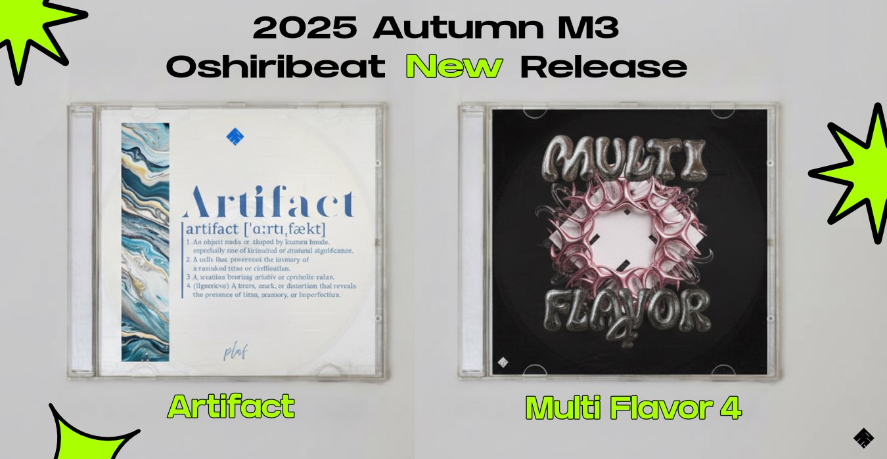
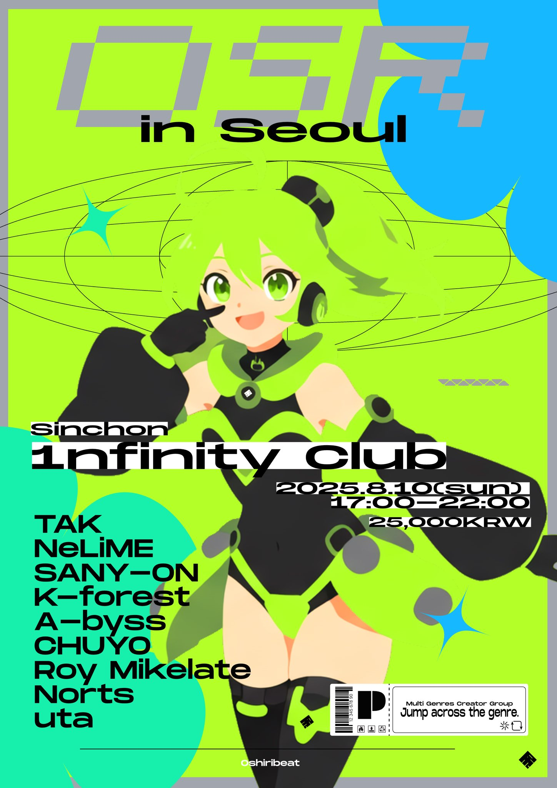
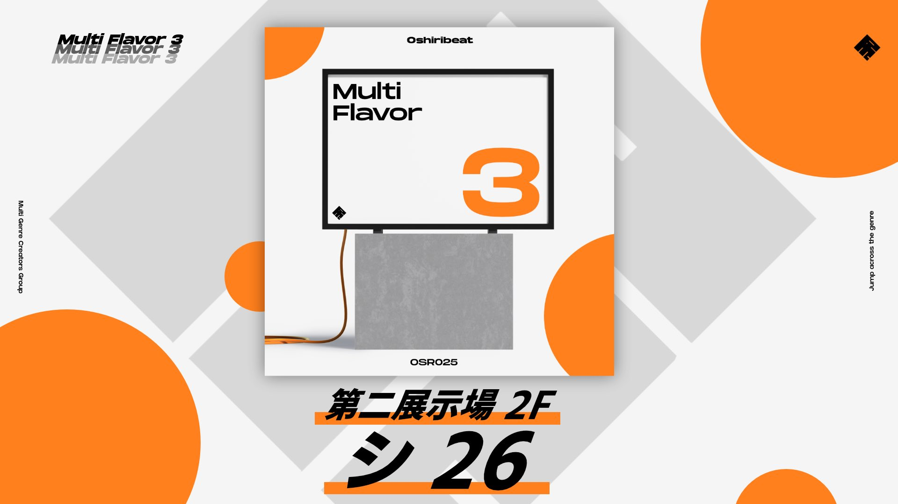
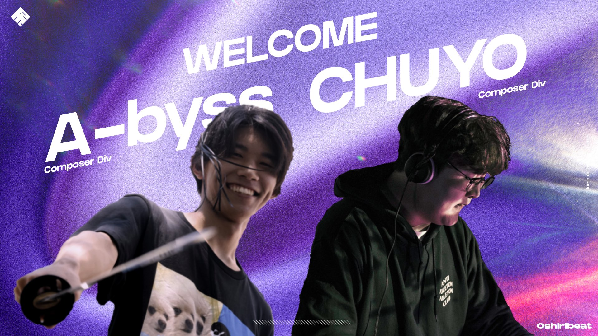
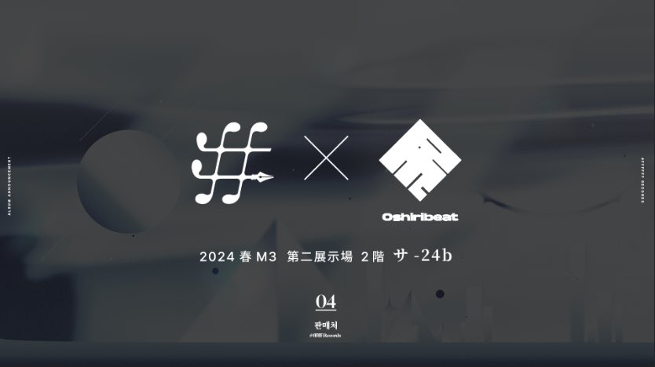
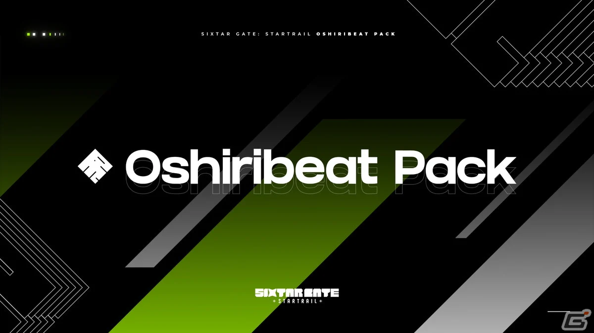
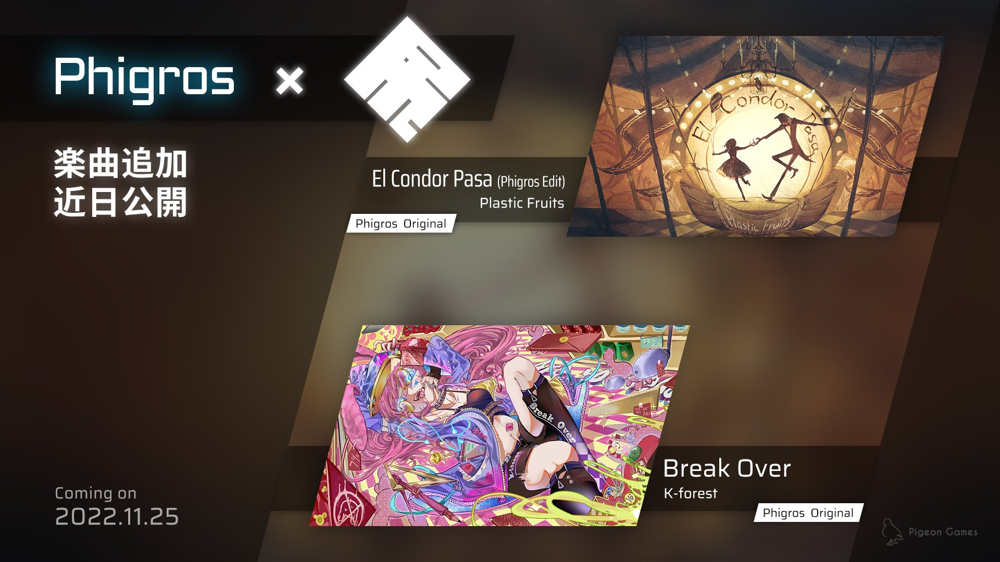

2025.11.04
#INFO #加入
OshiribeatにRaimukunが加入

2025.10.19
#INFO #M3
2025年秋M3でMulti Flavor 4とArtifactを頒布

2025.04.27
#INFO #EVENT
Oshiribeat初の海外公演 OSR in Seoul 開催決定

2024.10.20
#INFO #M3
2024年秋M3でMulti Flavor 3を頒布

2024.04.20
#INFO #加入
OshiribeatにA-byssとCHUYOが加入

2024.04.20
#INFO #M3
2024年春M3 #ffffff Records様と共同出展

2023.12.13
#RELEASE #MUSIC #COLLAB
Sixtar Gate: Startrail Oshiribeatコラボ発売!

2022.11.18
#RELEASE #MUSIC #COLLAB
Phigros Oshiribeatコラボ発表！